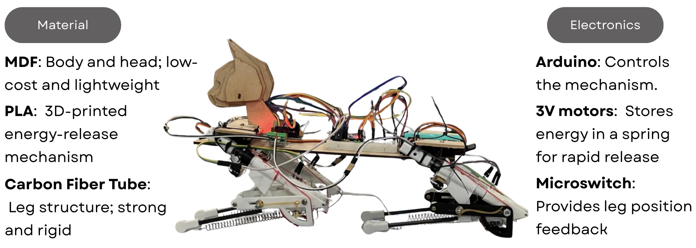
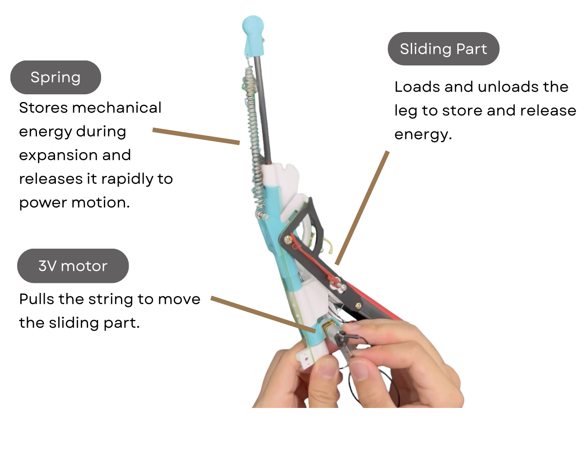

BACKFLIP ROBOT CAT
rapid energy‑release mechanism

OVERVIEW
- This project was inspired by a well‑known meme in Taiwan: “Do you want to come over to see my cat do a backflip?”
- We joined a competition where we had to build the entire robot cat in just 24 hours and keep the cost under 30 USD. To meet these constraints, we designed a low‑cost, quick energy‑release mechanism powered by two 1.5V batteries and a 3V motor.
HOW IT WORKS
MECHANISM VIDEO
RESULTS & RECOGNITION
- We successfully built the robot cat to perform a backflip, demonstrating a rapid energy-release mechanism within a low-cost design.
- We won the Best Popularity Award, proving that building something fun and enjoyable can also earn appreciation from others.